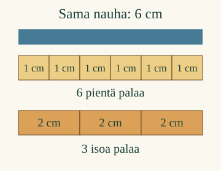

<link rel="stylesheet" href="lesson.css">
<link rel="stylesheet" href="entry-pilot.css">

<section data-teaching-step="1" data-lesson-role="teaching-step">
<section data-entry-intro><div><h2>Mittaa nauha</h2><p>Aava tarvitsee nauhan.</p></div></section>
</section>

<nav data-entry-nav aria-label="Oppitunnin kohdat" data-lesson-role="metadata"><a href="#mittaa-tutki">Tutki</a><a href="#mittaa-miksi">Miksi näin?</a><a href="#mittaa-lopuksi">Lopuksi</a></nav>

<section data-teaching-step="2" data-lesson-role="teaching-step" data-audience-spacing="compact">
<section id="mittaa-tutki" data-entry-explore aria-label="Tutki mittaamista"><div data-measure><p>Ilman harjoitusta: lado kuusi 1 cm:n paperipalaa peräkkäin. Vaihda ne kolmeen 2 cm:n palaan. Tarkista yhteinen alku ja loppu. Mittaa myös viivoittimella kohdasta 2 kohtaan 8.</p></div></section>
</section>


<section id="mittaa-miksi"><section data-teaching-step="3-1" data-lesson-role="teaching-step"><h2>Samanpituiset palat alusta loppuun</h2>
<p>Laita samanpituiset palat jonoon nauhan alusta loppuun. Ei rakoja eikä paloja päällekkäin. Kuvassa yksi pieni pala on 1 cm.</p>
<figure data-lesson-role="worked-example"><figcaption>6 yhden sentin palaa tai 3 kahden sentin palaa. Nauha on molemmilla tavoilla 6 cm.</figcaption></figure></section>
<section data-teaching-step="3-2" data-lesson-role="teaching-step"><h3>Kuusi palaa, kuusi senttimetriä</h3><p>Kuusi 1 cm:n palaa peittää nauhan. Mittaustulos on <strong>6 cm</strong>. Pelkkä luku ei kerro, minkä kokoisilla paloilla mitattiin.</p></section>
<section data-teaching-step="3-3" data-lesson-role="teaching-step"><h3>Rakoa ei lasketa palaksi</h3><p>Jos keskeltä puuttuu yksi pala, viisi palaa ei peitä koko kuuden sentin nauhaa. Täytä rako. Laske vasta sitten koko pituus.</p></section>
<section data-teaching-step="3-4" data-lesson-role="question"><section data-lesson-role="question"><h3>Mieti</h3><p>Tarvitaanko 2 cm:n paloja enemmän vai vähemmän?</p><details data-lesson-role="answer"><summary>Paljasta ajatus</summary><p>Vähemmän. Yksi iso pala korvaa kaksi pientä. Nauhan pituus pysyy samana.</p></details></section></section>
<section data-teaching-step="3-5" data-lesson-role="teaching-step"><h3>Kun alku ei ole nollassa</h3><p>Rima alkaa viivoittimen kohdasta 2 ja loppuu kohtaan 8. Laita palat riman alkuun. Välejä on kuusi, joten rima on <strong>6 cm</strong>. 8 kertoo loppukohdan.</p></section></section>


<section data-teaching-step="4" data-lesson-role="teaching-step">
<details data-lesson-role="teaching-step"><summary>Kokeile ilman ruutua</summary><p>Mittaa kirjan reuna samanpituisilla paperipaloilla. Merkitse tulokseen palan pituus tai käytetty yksikkö. Aikuinen saa auttaa, jos viimeinen pala ei mahdu kokonaan.</p></details>
</section>

<details data-lesson-role="teacher-note"><summary>Opettajalle: tavoite ja rajat</summary><p>Vuosiluokat 1–2, procedure/atomic. Pakollinen M-MEAS-03 antaa senttimetrin ja viivoittimen välin. Tässä yhdistetään palojen asettelu ja tuloksen ilmoittaminen. M-MEAS-01:n epästandardeja yksiköitä ei lisätä portiksi. Kokeilu rajataan kokonaisiin senttimetreihin ja kokonaisiin paloihin; ei vaadita murto-osia tai muuta yksikkömuunnosta.</p><p>Nauha ja palat käyttävät samaa kuvakoordinaattia. Ruutukuva ei ole fyysisesti kalibroitu senttimetrin kokoiseksi. Palan asetuksen numero on käyttöliittymän tunniste, ei mittaustulos. Palojen rivijärjestys saa vaihtua: tarkistus vertaa peittävyyttä. Hyväksytään 6 cm tai oikein nimetty määrä valitun kokoisia paloja. Päällekkäiset palat porrastetaan kuvassa hieman näkyvyyden vuoksi.</p><p>Offline: anna yhtäsuuret paperipalat ja viivoitin. Pyydä näyttämään alku, peitto ja loppu sekä nimeämään yksikkö. Ruutu ei todenna fyysistä asettelua tai itsenäistä mittaustaitoa. Ei tallennusta, pisteitä tai oppijahistoriaa.</p></details>

<section data-teaching-step="5" data-lesson-role="teaching-step">
<p id="mittaa-lopuksi" data-lesson-role="question"><strong>Lopuksi:</strong> miksi kolme isoa palaa voi mitata saman pituuden kuin kuusi pientä?</p>
</section>

